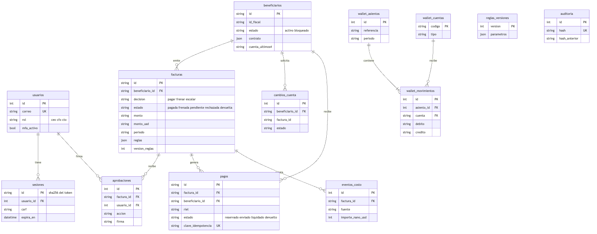

Modelo de datos de Kauta
La factura normalizada que lee el motor, las tablas de la base y las 13 reglas con su umbral. Fuente: aidlc-docs/inception/hechos-del-codigo.md §5, §6 y §11, y kauta/kauta/normalizacion.py. Todos los datos son ficticios; no hay dinero real.
1. Factura normalizada (FacturaCanonica)
Versión kauta-factura/2 (normalizacion.py:26). Cualquier lector (XML fiscal, referencia, OCR, IA) la produce; el motor consume su adaptador a_extraccion_v1 (normalizacion.py, método de la clase). Dinero en Decimal dentro del núcleo; en la base es NUMERIC(18,2) (modelos.py:24-25).
| Campo | Tipo | Nota |
|---|---|---|
| version, tipo | texto | tipo: factura, nota_credito, nota_debito, cuenta_cobro, documento_soporte, recibo_pago, otro |
| numero, fecha_emision, fecha_vencimiento, moneda | texto | fechas normalizadas por país |
| emisor, receptor | Parte | nombre, id_fiscal, tipo_id, id_valido, pais, correo |
| lineas | lista de Linea | descripcion, cantidad, unidad, precio_unitario, total |
| impuestos | lista de Impuesto | tipo (IVA, INC, ICA, ISR...), tasa, base, monto, retencion |
| subtotal, total, total_a_pagar, tasa_cambio | decimal | total_a_pagar es el monto que evalúa el motor |
| metodo_pago, cuenta_destino | texto | cuenta: solo los últimos 4 dígitos |
| id_fiscal_unico, tipo_id_unico | texto | CUFE, UUID del CFDI, CAE; base de R03 (duplicados) |
| documento_relacionado, orden_compra, horas | texto, decimal | horas para contratos por horas (R08) |
| metodo_lectura | texto | xml_fiscal, referencia, ia (y texto_pdf, ocr según hechos §11) |
| confianza, alertas, validaciones | dict, lista, lista | confianza 0 a 1 en seis campos; alertas como instruccion_sospechosa (R13) |
Clave de duplicado: el identificador fiscal único si existe; si no, emisor + tipo + número (clave_duplicado).
2. Entidades de la base de datos
SQLAlchemy 2.0, SQLite por defecto (PostgreSQL opcional). Tablas creadas con create_all al arrancar; no hay migraciones (hechos §5). 16 clases en servidor/modelos.py; el diagrama muestra 13 de ellas con sus claves y relaciones. Las relaciones son las claves foráneas declaradas (modelos.py:91,136,179,213-214,245,291-292,302-303).

Fuentes del diagrama: .mmd · .svg. Quedan fuera del diagrama organizaciones, invitaciones e idempotencia.

| Tabla | Campos clave | Restricciones |
|---|---|---|
| organizaciones | id, nombre, id_fiscal, datos | PK id |
| usuarios | correo, rol, hash_contrasena, totp_cifrado, mfa_activo, bloqueado_hasta | correo único; rol en ceo, cfo, cto |
| invitaciones | correo, rol, hash_codigo, expira_en, usada_en | índice de invitaciones abiertas |
| sesiones | id (SHA-256 del token), usuario_id, csrf, expira_en | FK a usuarios con CASCADE |
| beneficiarios | id, id_fiscal, estado, contrato (JSON), riel, cuenta_cifrada, cuenta_ultimos4 | estado: activo o bloqueado |
| cambios_cuenta | beneficiario_id, factura_id, cuenta_nueva_cifrada, estado, solicitada_por, verificada_por | estado: pendiente, aprobado, rechazado |
| reglas_versiones | version, parametros (JSON), creada_por, motivo, cambios | PK version; cada edición de reglas es una versión nueva |
| facturas | id, beneficiario_id, hash_documento, extraccion (JSON), monto, moneda, monto_usd, periodo, decision, estado, motivo, reglas, version_reglas, aprobaciones_requeridas | decision: pagar, frenar, escalar; estado: pagada, frenada, pendiente, rechazada, devuelta |
| aprobaciones | factura_id, usuario_id, nivel, accion, comentario, datos_firmados, firma, con_mfa | única por (factura, usuario) |
| eventos_costo | factura_id (nulo para infraestructura), fuente, origen_id, importe_nano_usd (nulo = desconocido), periodo | única por (fuente, origen_id); 8 fuentes |
| wallet_cuentas, wallet_asientos, wallet_movimientos | libro de doble partida en USD | CHECK: débito o crédito, nunca ambos |
| pagos | factura_id, beneficiario_id, riel, monto_usd, tasa_aplicada, comision_usd, estado, clave_idempotencia, firma, linea_tiempo | clave de idempotencia única; un solo pago vivo por factura (índice parcial); estado: reservado, enviado, liquidado, devuelto |
| auditoria | tipo, actor, entidad, resumen, datos, hash_anterior, hash | hash único; cadena HMAC-SHA256 |
| idempotencia | clave, usuario_id, ruta, respuesta | definida pero ninguna ruta la usa (hechos §5) |
modelos.py:9) pero no hay disparadores ni permisos de base que impidan UPDATE o DELETE: NO ENCONTRADO. La integridad se comprueba al leer la cadena de auditoría y el libro.3. Las 13 reglas
Catálogo en kauta/motor.py:29-43. Los valores salen de data/reglas.json (versión 1) y se copian a reglas_versiones al sembrar. Orden de precedencia: frenar R05, R03, R04, R09, R12; escalar R06, R13, R07, R01, R08, R10, R11, R02 (motor.py:45-46). Un error inesperado escala, nunca paga.
| Id | Nombre | Efecto | Umbral o clave |
|---|---|---|---|
| R01 | Datos legibles, completos y válidos | escalar (frenar si es nota crédito, recibo de pago u otro) | confianza_minima 0,85 |
| R02 | Moneda permitida | escalar | USD, COP, MXN (monedas_permitidas) |
| R03 | Factura no duplicada | frenar | CUFE/UUID/CAE, hash o mismo número del mismo beneficiario |
| R04 | Un solo cobro por periodo (contrato fijo) | frenar | un cobro por beneficiario y periodo |
| R05 | Beneficiario no bloqueado | frenar | estado del beneficiario |
| R06 | Beneficiario en la lista permitida | escalar | lista de beneficiarios activos |
| R07 | Cuenta de pago igual a la registrada | escalar | últimos 4 dígitos de cuenta_registrada |
| R08 | Monto cuadra con lo acordado | escalar | tolerancia_contrato_pct 2 % |
| R09 | Dentro del límite máximo por pago | frenar | limite_maximo_pago_usd 10.000 |
| R10 | Dentro del umbral de aprobación humana | escalar | umbral_aprobacion_usd 3.000 |
| R11 | Dentro del límite por beneficiario en el periodo | escalar | limite_beneficiario_periodo_usd 4.000 |
| R12 | Saldo suficiente en el periodo | frenar | presupuesto_periodo_usd 15.000 |
| R13 | Sin instrucciones sospechosas | escalar | alerta instruccion_sospechosa del extractor |
Firmas requeridas: 0 si el motor decide pagar; 1 si escala con monto hasta el umbral; 2 (personas distintas) si escala sobre el umbral (servicios/agente.py:154). Tasas de cambio de la versión 1: USD 1, COP 3200, MXN 18,4. Los montos en USD se convierten con redondeo ROUND_HALF_UP a 2 decimales (motor.py:138-144).